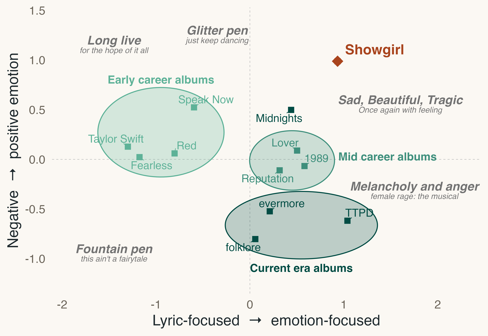
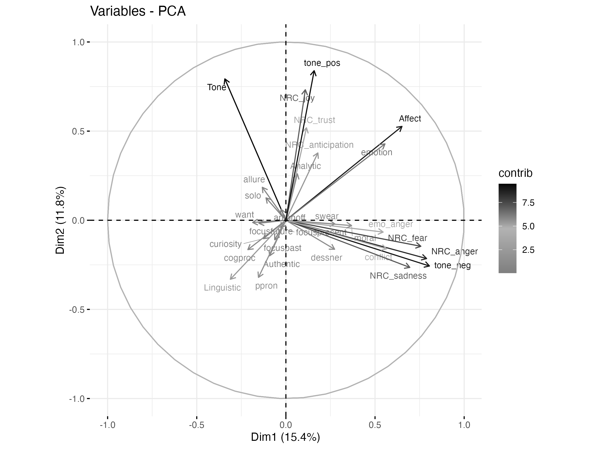
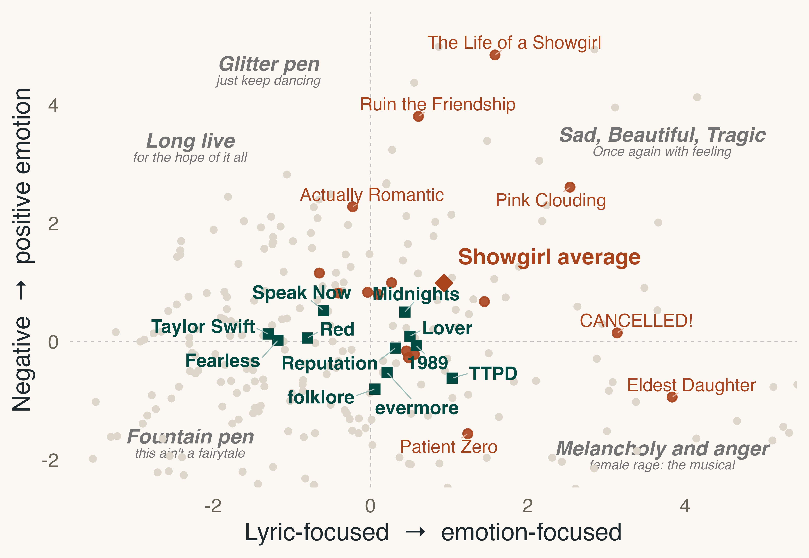
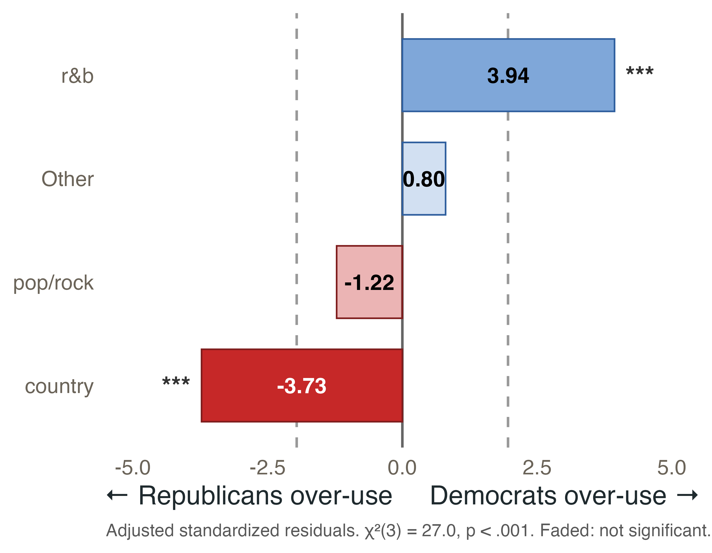
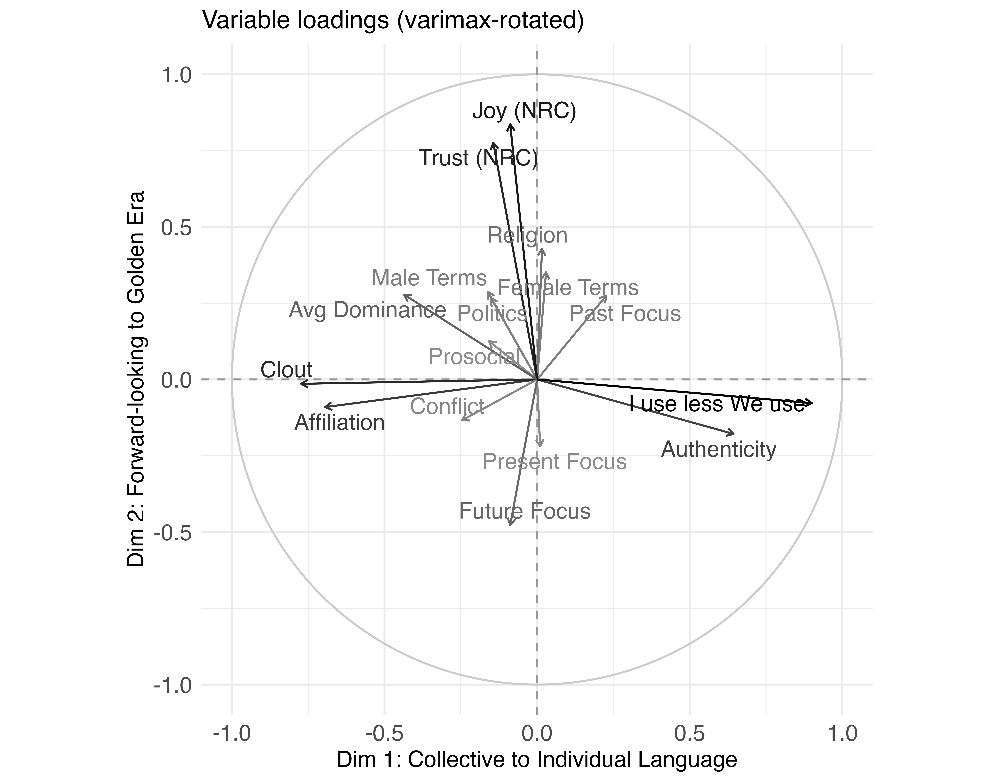
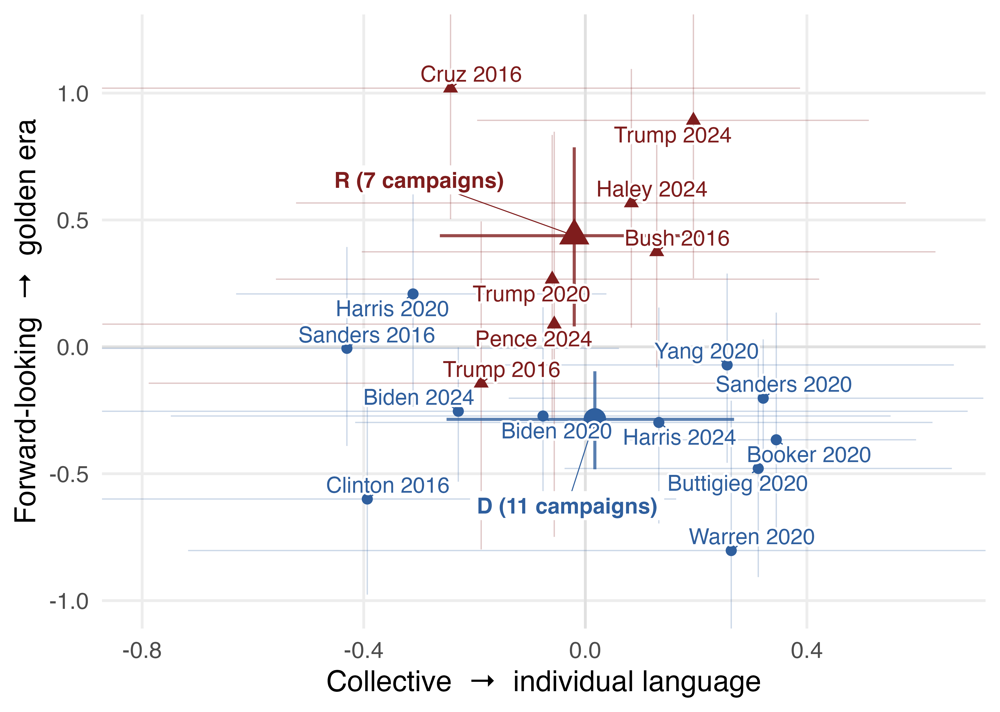

Meaning through Music
Lyrics, campaigns and fandom · Jean Clipperton
Projects
01 Swiftian saudade Joy and sorrow in Taylor Swift’s lyrics, now with Showgirl
02 Campaign playlists 232 rally songs, 2016–2024: what they say about party and candidate
↳ Expanding the data Adding campaigns before 2016
03 Songs vs. speeches Do Harris’s and Trump’s 2024 rally songs echo what they said?
04 Fandom as home 337,793 Reddit comments: how fans build a third place
01 · Taylor Swift
Swiftian Saudade:
joy and sorrow
interwoven.
Taylor Swift’s lyrics analyzed with lexicon approaches
“You do not get to tell me about Sad”: Swiftian Saudade in Taylor Swift’s Lyrics (2026) · 423 tracks
01 · Taylor Swift
Lyrics and emotion in song
Left to right: lyric-focused to emotion-focused language. Bottom to top: negative to positive tone.

01 · Taylor Swift
Clear era clustering
Early, mid-career and current albums each form their own cluster. Showgirl may be ushering in a new era.

01 · Taylor Swift
Showgirl is her most positive era.
Second only to TTPD in emotional focus.

02 · Campaign playlists
Do rally playlists
carry a message?
232 rally songs 13 candidates 2016–2024
02 · Campaign playlists
Country is Republican. R&B is Democratic.
Pop and rock are shared ground.

02 · Campaigns
Reading the axes
Up: joy, trust and religion — the golden era. Down: future focus. Left: clout and affiliation. Right: “I” talk and authenticity.

02 · Campaigns
Republicans play the past.
Every GOP campaign sits above the Democratic average on nostalgia.

Where things stand
Still in the studio.
Pre-2016 campaigns [Data gathering]
Songs vs. speeches [Data gathering + preliminary analysis]
Fandom as home [Analysis]
Next · Predicting campaign music
What makes a song a campaign song?
Next · Predicting campaign music
The project
Data Songs from Billboard Hot 100 (1958-now) + Last.fm streaming data
Time period US Presidential Candidates (campaigns with >5 songs and multiple events) 2016*-2024
Research Q How do campaign songs compare to songs not selected by campaigns?
Thank you!
clipperton@uchicago.edu